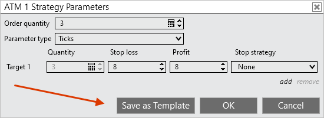
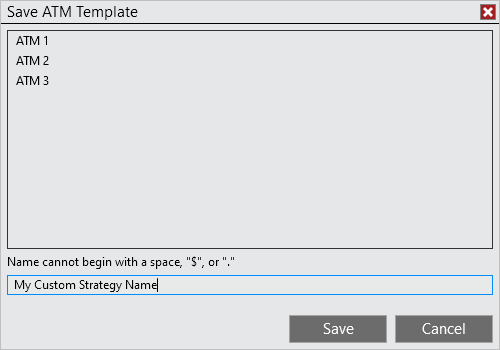
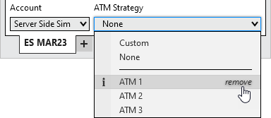

|
<< Click to Display Table of Contents >> Manage Server Side ATM Templates |


|
Manage Server Side ATM Templates
|
<< Click to Display Table of Contents >> Manage Server Side ATM Templates |
|
An ATM Strategy is defined by the parameters you enter into the ATM Strategy parameters section on any of the order entry screens. The collection of parameters that make up a strategy can be saved as a template that you can recall at a later date to automatically populate all of the ATM Strategy parameters. Templates are specific to your account and the selected instrument.


Within the ATM Strategy dropdown menu, hover your mouse over the ATM Strategy you want to remove, then select remove.
